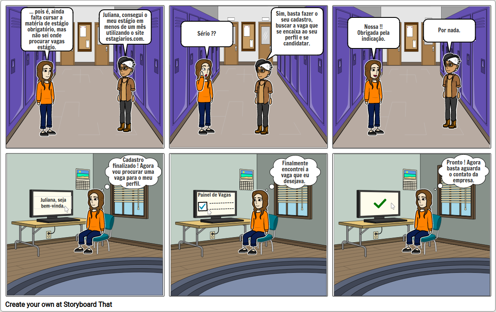

Storyboard
O storyboard é um tipo de prototipação de baixa-fidelidade que consiste em uma série de desenhos mostrando como um usuário pode progredir em uma tarefa utilizando o produto que está sendo desenvolvido. O papel fundamental do storyboard é permitir o entendimento de tudo sobre as tarefas. Dessa forma, um storyboard deve apresentar desenhos sobre as tarefas dos usuários.
Storyboard 01 - Candidatar-se a vagas de estágio
Descrição do storyboard
| Atividade | Tarefa | Definição |
|---|---|---|
| Preparo | Definição das pessoas envolvidas |
Universitária Juliana Universitário Luís |
| Definição do ambiente da história |
Universidade Casa da universitária Juliana |
|
| Definição da tarefa a ser abordada | Candidatar-se à vaga uma vaga de estágio. O usuário deve previamente realizar seu cadastro no site. | |
| Sequência | Definição de quais passos estão envolvidos para realização da tarefa |
|
| Definição do que leva a pessoa a usar a aplicação | A necessidade de cursar a matéria de estágio obrigatório da sua universidade. | |
| Definição de qual tarefa será ilustrada | Buscar a vaga de estágio desejada e na sequência se candidatar a ela. | |
| Satisfação | Motivação principal da pessoa que usa a aplicação | Cadidatar-se a vagas de estágio de maneira simples e sem sair de casa. |
| Definição das realizações que a aplicação permite | Canditar-se a vagas de estágio sem a necessidade de ir diretamente às empresas que a pessoa deseja conseguir um estágio. | |
| Definição das necessidades que a aplicação se propõe a sanar | Facilitar e agilizar o processo de contratação de estagiários. |
Storyboard

Avaliação do Storyboard 01
Preparação
Termo de Consetimento
Participante(s)
| Item | Descrição |
|---|---|
| Nome | Juliana Pereira (Persona) |
| Perfil | Estudante do curso de Direito |
| Idade | 24 |
Tarefas
- Buscar vagas de estágio;
- Cadidatar-se para as vagas desejadas.
Coleta de dados e Interpretação
O storyboard foi apresentado para o(s) participantes, assim demonstrando o processo a ser realizado para se canditar a uma vaga.
Problema(s) encontrado(s):
- Demora para encontrar vagas que estão de acordo com o perfil do usuário.
Consolidação e Relato dos Resultados
Objetivos da Avaliação
Encontrar problemas usabilidade relacionados a tarefa que permite o usuário se candidatar para vagas de estágio.
Problema(s) Encontrado(s)
Problema 01
| Item | Definição |
|---|---|
| Descrição do Problema | A falta de opções e mecanismos para agilizar o processo de busca de vagas de acordo com o perfil do usuário. O usuário tem que procurar a vaga desejada consultando uma lista com vagas para todos os perfis de estudante. |
| Fatores de Usabilidade Prejudicados | Flexibilidade e eficiência de uso |
| Sugestão de Correção | Adição de opção para busca automática de vagas de acordo com o perfil do usuário. |
Histórico
| Data | Versão | Descrição | Autor(es) |
|---|---|---|---|
| 27/10/2020 | 0.1 | Adição da primera versão do artefato | Gustavo Nogueira |
| 01/12/2020 | 0.2 | Adição de ajustes na página | Gustavo Nogueira |
Referências
- PREECE, Jennifer; ROGERS, Yvonne; SHARP, Helen. Design de Interação: Além da Interação Humano-Computador. Editora Bookman, 3ª Edição.
- Livro: BARBOSA, S. D. J.; SILVA, B. S. Interação Humano-Computador. 1ª edição, Rio de Janeiro: Elsevier, 2010.